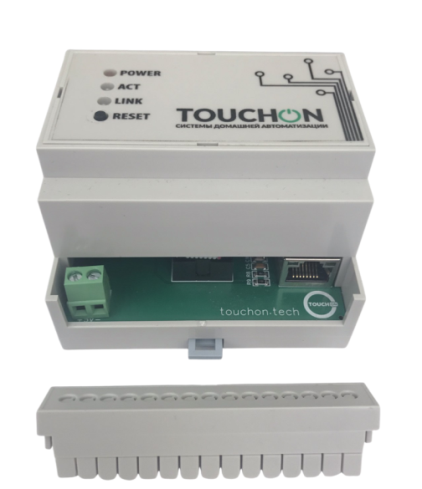
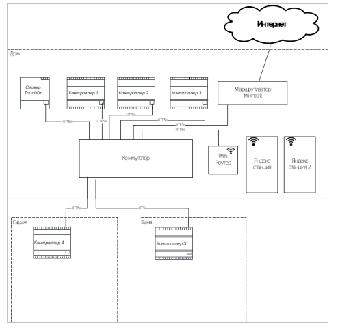

Добро пожаловать в документацию системы домашней автоматизации TouchOn
Описание
Система домашней автоматизации TouchOn строится на базе сервера и микроконтроллера.Связь модулей системы происходит по сети Ethernet и для их объединения необходим коммутатор или роутер, который подбирается исходя из количества контроллеров.
Кроме того, для управления и мониторинга системы необходим маршрутизатор Mikrotik.
Состав системы
Сервер
Сервер устанавливается на DIN рейку и имеет один Ethernet порт и клеммы для подключения питания. Питание контроллера DC +5В. Конфигурация системы происходит через админпанель, которая доступна через Web-интерфейс сервера.
IP-адрес сервера, по умолчанию: 192.168.6.50.
Имя пользователя: admin; пароль: 111111

Контроллер
Котроллер TouchOn имеет 14 аналоговых входов, 14 аналоговых выходов с возможностью подключения нагрузки до 16А. И 17 цифровых входов для подключения датчиков и дополнительных модулей (модуль диммера, модуль управления котла и др.) Питание контроллера DC 12В либо POE.
адрес контроллеров по умолчанию 192.168.0.14/sec
ip: 192.168.0.14; пароль: sec

Общий вид системы
